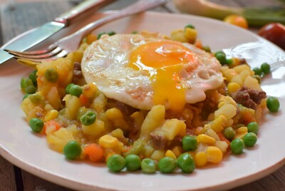

Les plats typiques
Bienvenue dans un voyage gustatif à travers les délices de l'Amérique du Sud, un continent riche en traditions culinaires et en saveurs envoûtantes. Des hautes montagnes des Andes aux vastes plaines de la pampa, chaque région de ce continent diversifié offre une palette unique de plats typiques qui reflètent l'histoire, la culture et la géographie de ses habitants.
Dans cet article, nous plongerons dans l'univers des plats emblématiques de l'Amérique du Sud, des mets ancestraux hérités des civilisations anciennes aux créations modernes inspirées par un mélange d'influences européennes, africaines et autochtones. Préparez-vous à découvrir des plats colorés, épicés et riches en saveurs qui sauront éveiller vos papilles et vous transporter au cœur de ce continent fascinant.
 Argentine
Argentine
 Bolivie
Bolivie
 Chili
Chili
 Colombie
Colombie
 Équateur
Équateur
 Pérou
Pérou
Avant de vous présenter les spécialités principales par pays, laissez-moi vous présenter quelques préparations que l'on retrouve dans toute l'Amérique du Sud et qui font partie des classiques à savoir. Le plus connu est évidemment l'empanada, qui est simple, savoureux et que l'on peut déguster à toute heure ! Je vous laisse découvrir les autres...
L'Empanada

L'empanada est un chausson croustillant, rempli de viande, de poisson, d'œuf, de pomme de terre ou d'autres ingrédients, enveloppé dans une pâte feuilletée ou à pain. Originaire d'Amérique latine, ce plat savoureux offre une multitude de combinaisons de saveurs et est apprécié dans toute la région pour sa simplicité et sa polyvalence. Parfait pour une collation rapide ou un repas sur le pouce.
L'Humita
L'humita est une délicieuse spécialité de la cuisine latino-américaine, appréciée pour sa simplicité et son goût authentique. Il s'agit d'une pâte de maïs assaisonnée d'huile et d'oignons, enveloppée dans des feuilles de maïs soigneusement ficelées. Cette préparation rustique offre une combinaison parfaite de saveurs douces et de textures moelleuses, faisant de l'humita un régal pour les papilles gustatives.
Le Ceviche

Le ceviche est un plat emblématique d'Amérique latine, réputé pour sa fraîcheur et sa simplicité. Ce plat est composé de poisson ou de crustacés marinés dans des agrumes et des assaisonnements, ce qui lui confère une saveur vive et acidulée. En combinant le poisson frais avec du jus de citron vert ou de lime, des oignons, du piment, de la coriandre et d'autres ingrédients aromatiques, le ceviche offre une expérience gustative unique et rafraîchissante. Que ce soit servi en entrée, en accompagnement ou en plat principal, le ceviche est un incontournable de la cuisine latino-américaine, parfait pour une explosion de saveurs estivales.
Quoi déguster en Argentine
Découvrez ci-dessous quelques plats, entrées et desserts typiques que vous pouvez savourer en Argentine :
- Asado: Barbecue argentin avec une variété de viandes grillées.
- Empanadas argentines: Chaussons farcis à la viande, aux œufs et aux olives.
- Milanesa: Escalope panée et frite.
- Choripán: Sandwich à la saucisse chorizo.
- Matambre: Roulade de viande farcie aux légumes et aux œufs durs.
- Humita en chala: Masse de maïs enveloppée dans des feuilles de maïs.
- Dulce de leche: Confiture de lait sucrée.
- Helado de dulce de leche: Glace au dulce de leche.
- Alfajores: Biscuits fourrés de dulce de leche et recouverts de chocolat.
- Chocotorta: Gâteau à base de biscuits imbibés de café et de dulce de leche.
La Milanesa
La Milanesa est un plat classique et réconfortant qui consiste en de fines tranches de bœuf, de poulet, de veau ou parfois même de porc. Ces tranches de viande sont ensuite enrobées de chapelure et légèrement frites dans de l'huile. Cela crée une croûte croustillante autour de la viande, tandis que l'intérieur reste tendre et juteux. La Milanesa est souvent servie avec des accompagnements tels que des frites, une salade fraîche ou même une sauce tomate savoureuse. C'est un plat populaire en Argentine, apprécié pour sa simplicité et son goût délicieux.
Un Asado
Au cœur de la culture sud-américaine se trouve l'asado, une tradition qui consiste à se réunir autour d'un barbecue. C'est un moment où amis et famille se retrouvent autour du feu pour partager de la viande grillée et des histoires. L'asado se déroule généralement en plein air, avec un asador (un expert du barbecue) qui s'occupe de la cuisson de la viande. C'est une expérience sociale et culinaire unique, où la convivialité et la bonne nourriture sont à l'honneur.
Quoi déguster en Bolivie
Retrouvez ci-dessous quelques plats, entrées et desserts typiques que vous pouvez déguster en Bolivie :
- Silpancho: Roulade de bœuf panée et frite, accompagnée de riz et de plantains frits.
- Sonso de yuca: Brochette de manioc et de fromage râpé, grillée, cuite au four ou frite.
- Salteñas: Chaussons farcis à la viande, aux œufs, aux olives et aux légumes.
- Charque de llama: Viande de lama séchée et marinée, souvent servie avec du riz et des légumes.
- Pique macho: Plat copieux à base de viande, de pommes de terre, de légumes et de piments.
- Api: Boisson chaude à base de maïs violet et aromatisée à la cannelle.
- Majadito: Plat de riz sauté avec de la viande de porc, des légumes et des épices.
- Queso humacha: Soupe crémeuse de maïs et de fromage, parfois garnie de viande.
- Tawa tawa: Plat de bœuf mijoté avec des pommes de terre, des oignons et des tomates.
- Mondongo: Ragoût de tripes avec des légumes et des épices.
Le Silpancho
Le Silpancho est un plat emblématique de la cuisine bolivienne, célèbre pour sa combinaison savoureuse et copieuse. Il est composé d'une base de riz et de pommes de terre, sur laquelle est déposée une fine couche de viande de bœuf hachée, qui est ensuite panée et frite à la manière de l'escalope viennoise. Cette viande panée est généralement accompagnée d'œufs frits, de tranches de tomate et d'oignon, ainsi que de salade, de riz et de pommes de terre frites. Le Silpancho est un plat réconfortant et consistant, souvent servi lors de grandes occasions familiales ou festives en Bolivie. Sa combinaison de textures et de saveurs en fait un plat apprécié de tous, tant pour son goût délicieux que pour sa générosité.
Sonso de yuca

Le Sonso de yuca est un mets populaire en Bolivie, apprécié pour sa simplicité et sa délicieuse combinaison de saveurs. Il est préparé à partir de manioc (ou yuca) et de fromage râpé, formant une pâte qui est ensuite enfilée sur une brochette. Cette préparation est ensuite grillée, cuite au four ou frite, selon les préférences culinaires régionales. Le résultat est une collation savoureuse et réconfortante, avec une texture croustillante à l'extérieur et un intérieur moelleux et fondant. Le Sonso de yuca est souvent dégusté en accompagnement d'autres plats boliviens ou en tant que collation à tout moment de la journée. C'est une spécialité appréciée pour son goût unique et sa facilité de préparation.
Quoi déguster au Chili
Retrouvez ci-dessous quelques plats, entrées et desserts typiques que vous pouvez déguster au Chili :
- Pastel de Choclo: Gratin de maïs sucré et salé avec du poulet ou du bœuf.
- Cazuela: Un ragoût traditionnel avec du poulet ou de la viande, accompagné de légumes et de maïs.
- Completo: Hot-dog chilien garni de nombreux ingrédients comme l'avocat, les tomates et la mayonnaise.
- Chorrillana: Frites garnies de viande, d'oignons et d'œufs.
- Empanadas: Chaussons farcis à la viande, aux crevettes, ou aux légumes.
- Pisco Sour: Cocktail à base de pisco, de jus de citron, de blanc d'œuf et de sucre.
- Mote con huesillo: Dessert à base de blé et de pêches séchées.
- Leche asada: Flan au lait caramélisé.
- Arroz con leche: Riz au lait sucré et parfumé à la cannelle.
- Manjar: Confiture de lait, utilisée souvent comme garniture pour les desserts.
Le Completo
Le completo chilien est une version unique du hot-dog, qui comprend des variations dans les ingrédients pour créer une explosion de saveurs. Typiquement, il est garni d'avocats, de tomates, de mayonnaise, de moutarde et de ketchup, mais aussi de sauce américaine et de choucroute, parmi d'autres possibilités. C'est un plat polyvalent et personnalisable, où chacun peut ajouter ses ingrédients préférés pour créer son propre completo parfait. Cette version chilienne du hot-dog est appréciée pour sa combinaison audacieuse de saveurs et sa capacité à satisfaire les envies de chacun.
Le Charquican
Le Charquicán est un plat réconfortant et traditionnel de la cuisine chilienne. Il s'agit d'un ragoût préparé à base de morceaux de pomme de terre, de haricots verts, de grains de maïs et de petits morceaux de viande de bœuf ou de porc. Parfois, il est également agrémenté de courges ou de citrouilles pour ajouter de la douceur au plat. Pour donner une touche de saveur supplémentaire, le Charquicán chilien peut être assaisonné avec des épices telles que le cumin, le paprika ou le piment, ainsi que de l'ail et de l'oignon. C'est un plat copieux et nourrissant, parfait pour se réchauffer pendant les journées fraîches, et il est souvent apprécié en famille ou entre amis lors des rassemblements traditionnels chiliens.
Quoi déguster en Colombie
Découvrez ci-dessous quelques plats, entrées et desserts typiques que vous pouvez savourer en Colombie :
- Ajiaco: Soupe de poulet avec des pommes de terre, du maïs et de l'avocat.
- Arepa: Pain de maïs garni de fromage, de viande ou d'œuf.
- Bandeja paisa: Assiette copieuse avec de la viande, des haricots, du riz, des œufs, de l'avocat et des bananes plantain.
- Lechona: Cochon de lait farci au riz, aux petits pois et aux épices.
- Sancocho: Ragoût de viande avec des légumes et du maïs.
- Chicharrón: Morceaux de porc frits croustillants.
- Obleas: Galettes fines fourrées au dulce de leche et à la confiture.
- Arequipe: Confiture de lait sucrée, utilisée souvent comme garniture pour les desserts.
- Bunuelos: Beignets de fromage frits, saupoudrés de sucre.
- Pandebono: Petit pain de fromage à la texture moelleuse.
Le Patacón
Le Patacon colombien est un plat populaire à base de banane plantain verte. Les morceaux de banane sont coupés en tranches, écrasés puis frits jusqu'à ce qu'ils soient croustillants. Servis seuls ou accompagnés de sauces ou de garnitures, les Patacones sont une délicieuse collation colombienne appréciée pour leur texture croquante et leur goût savoureux.
L'Arepa
L'Arepa est un pain traditionnel d'Amérique latine, particulièrement populaire en Colombie et au Venezuela. Il est fabriqué à partir de farine de maïs précuite, d'eau et de sel, formant une pâte qui est ensuite façonnée en disques plats puis cuite sur une surface chaude. Une fois cuite, l'Arepa peut être garnie de divers ingrédients, notamment de jambon, de fromage, de viande, de haricots ou d'œufs, selon les préférences culinaires. Ce plat polyvalent est apprécié à toute heure de la journée, que ce soit au petit-déjeuner, au déjeuner ou en tant que collation. L'Arepa est appréciée pour sa texture moelleuse à l'intérieur et croustillante à l'extérieur, ainsi que pour sa capacité à être personnalisée selon les goûts de chacun.
Le Jugo en leche
Le Jugo en Leche est une boisson traditionnelle qui associe simplement du jus de fruits frais avec du lait. C'est une boisson rafraîchissante et crémeuse, parfaite pour se désaltérer par temps chaud en Colombie. Les Colombiens apprécient cette boisson pour sa simplicité et sa délicieuse combinaison de saveurs de fruits frais et de lait.
Quoi déguster en Équateur
Découvrez ci-dessous quelques plats, entrées et desserts typiques que vous pouvez savourer en Équateur :
- Ceviche ecuatoriano: Plat de poisson ou de fruits de mer marinés dans du citron vert.
- Locro de papa: Soupe de pommes de terre, d'avocat, de fromage et d'épices.
- Llapingachos: Galettes de pommes de terre farcies au fromage et frites.
- Seco de chivo: Ragoût de viande de chèvre avec du riz et des haricots.
- Encebollado: Soupe de poisson avec des oignons marinés et des bananes plantain.
- Hornado: Porc rôti au four avec des pommes de terre et des légumes.
- Arroz con leche: Riz au lait sucré et parfumé à la cannelle.
- Empanadas de viento: Chaussons frits farcis au fromage et au sucre.
- Torta de chocho: Gâteau à base de graines de chocho, de farine et de sucre.
- Choclo con queso: Maïs grillé servi avec du fromage.
Le Cuy

Le Cuy est une spécialité culinaire qui consiste à rôtir à la broche un cochon d'Inde géant, de la taille d'un petit lapin. Ce plat traditionnel est une délicatesse dans la cuisine péruvienne, appréciée pour sa saveur unique et sa texture tendre. Le Cuy est souvent assaisonné avec des herbes et des épices locales avant d'être grillé lentement à la broche jusqu'à ce qu'il soit doré et croustillant à l'extérieur, tout en restant juteux à l'intérieur.
La Guatita
La Guatita est un ragoût équatorien préparé avec des tripes cuites dans une sauce à base de pommes de terre et de cacahuètes. Ce plat est un classique de la cuisine équatorienne, apprécié pour sa richesse en saveurs et sa texture onctueuse. Les tripes sont souvent cuites lentement dans une sauce mijotée avec des pommes de terre, des arachides, des épices et d'autres ingrédients aromatiques, ce qui donne au plat une profondeur de goût caractéristique. La Guatita est souvent servie avec du riz ou de la banane plantain.
Le Seco de chivo
Le Seco de chivo est un ragoût épais à base de viande de chèvre, un plat traditionnel de l'Équateur. Servi avec du riz et des plantains frits, ce plat est apprécié pour sa saveur riche et sa tendreté. C'est un repas réconfortant et délicieux, parfait pour savourer la cuisine équatorienne authentique.
Quoi déguster au Pérou
Pérou
Découvrez ci-dessous quelques plats, entrées et desserts typiques que vous pouvez savourer au Pérou :
- Ceviche: Plat de poisson ou de fruits de mer marinés dans du citron vert.
- Lomo saltado: Lamelles de bœuf sautées avec des oignons, des tomates et des frites.
- Aji de gallina: Poulet en sauce crémeuse aux noix et au piment.
- Cuy: Cochon d’Inde géant rôti à la broche.
- Anticuchos: Brochettes de cœur de bœuf mariné et grillé.
- Pollo a la brasa: Poulet rôti à la broche, servi avec des frites.
- Papa a la huancaína: Pommes de terre dans une sauce crémeuse au fromage et au piment.
- Chifa: Cuisine péruvienne-chinoise, avec des plats comme le lomo saltado et le chaufa.
- Suspiro a la limena: Dessert de meringue sucrée, garni de caramel.
- Mazamorra morada: Dessert à base de maïs violet et de fruits, aromatisé à la cannelle.
L'Ají de gallina
L'Aji de Gallina est une crème épaisse à base de chair de poulet déchiquetée, cuisinée dans un bouillon aromatique et additionnée de pain trempé. Originaire du Pérou, ce plat est apprécié pour sa texture crémeuse et son mélange unique de saveurs. La chair de poulet est cuite lentement dans un bouillon parfumé, puis mélangée à du pain trempé pour épaissir la sauce et lui donner une consistance veloutée. Des épices comme le piment Aji amarillo et d'autres condiments sont souvent ajoutés pour relever le goût.
Le Lomo Saltado
Le Lomo Saltado est un plat péruvien populaire composé de lamelles de bœuf sautées dans un wok avec de l'oignon rouge, des tomates, des frites et des épices. Traditionnellement, il est servi avec du riz blanc. Ce plat allie parfaitement les saveurs et les textures, avec la tendreté de la viande de bœuf, la fraîcheur des légumes sautés et le croquant des frites. Les épices et les sauces ajoutent une touche de piquant et de complexité à ce plat délicieux.